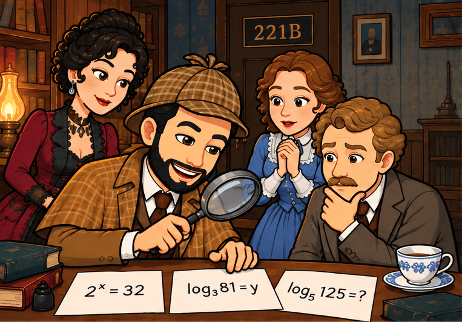
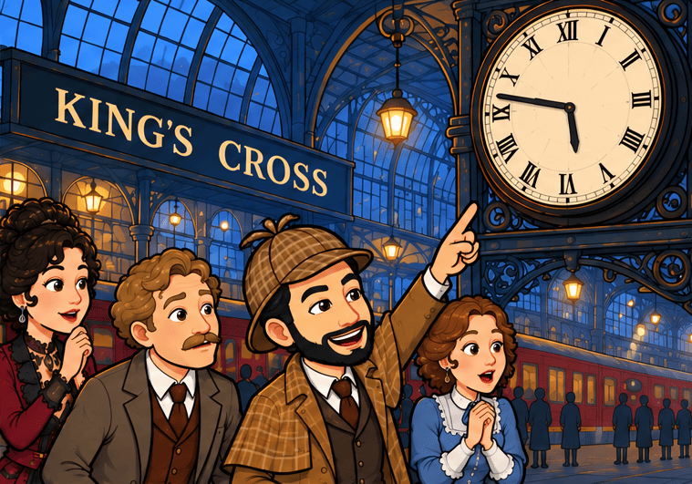
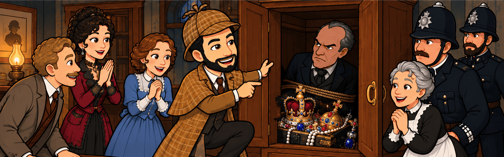
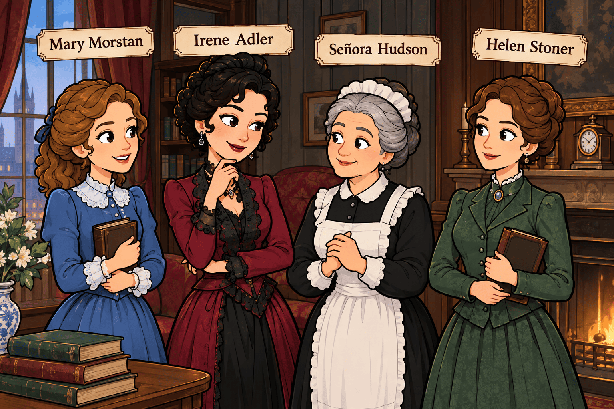

🕵️ El expediente e: el misterio de los logaritmos
Londres, una fría noche de noviembre.
La lluvia golpeaba con fuerza los cristales del número 221B de Baker Street, hacía un par de horas que las alarmas sonaban en todo londres por el robo en la Torre de Londres de las Joyas de la Corona. En el interior, el fuego de la chimenea iluminaba tenuemente la habitación. El doctor Watson escribía unas notas mientras Sherlock Holmes observaba, pensativo, una pequeña hoja de papel y un mapa que había sacado de un paquete con remitente anónimo que le había llegado por mensajería urgente.
—Holmes, llevas casi una hora mirando ese papel y ese mapa. ¿Qué pueden tener de interesante?
Holmes levantó la mirada.
—Mucho, querido Watson. Muchísimo.
—¿Son una pista del caso?
—Son algo más que una pista. Son un mensaje.
Watson se acercó.
Miró el mapa, se trataba de un viejo esquema de las lineas y las estaciones del Metro de Londres con muchas anotaciones indescifrables.
Luego miró el papel, y se percató de que aparecían únicamente unas palabras y varias expresiones matemáticas:
\(2^x=32\) ; \(\log_3 81=x\) ; \(\log_5 125=y\)
Y, debajo, una última frase:
«Cuando conozcas los valores de x e y, sabrás dónde buscar.»

—¡Por todos los santos! —exclamó Watson—. ¿Moriarty?
Holmes asintió lentamente.
—Profesor James Moriarty. El único criminal de Londres capaz de convertir las matemáticas en un arma.
En ese momento, la puerta se abrió.
—¡Señor Holmes! —dijo la señora Hudson—. Tiene una visita.
Detrás de ella aparecieron dos mujeres.
La primera era Irene Adler, conocida por Holmes por su inteligencia y su extraordinaria capacidad para resolver problemas.
La segunda era Mary Morstan, que parecía preocupada.
—Señor Holmes —dijo Mary—, necesito su ayuda.
—Siéntese, señorita Morstan.
Mary dejó sobre la mesa un pequeño sobre.
—Esta mañana encontré esto en mi casa. No sé quién lo dejó allí.
Holmes abrió el sobre. Dentro había otra hoja.
Esta vez solo aparecía una expresión:
\(\log_2 64\)
Y una frase:
«El tiempo se agota. A medianoche, Londres conocerá mi poder.»
Watson palideció.
—¿Una amenaza?
—Sin duda —respondió Holmes—. Pero Moriarty no amenaza sin dejar un método detrás.
Irene Adler observó el papel.
—La clave está en los logaritmos.
Holmes sonrió.
—Exactamente.
El lenguaje secreto de Moriarty
Holmes tomó una tiza y escribió en una pizarra:
\(\log_a b=c\)
—Watson, ¿qué significa esto?
—Que \(a^c=b\).
—Exacto. Un logaritmo nos pregunta: «¿A qué exponente tengo que elevar la base para obtener el número?»
Holmes señaló la primera expresión.
\(2^x=32\)
—Si queremos conocer \(x\), debemos preguntarnos: ¿a qué exponente debemos elevar \(2\) para obtener \(32\)?
Watson pensó unos segundos.
— \(2^5=32\). Por tanto, \(x=5\).
Holmes escribió:
\(x=5\)
Después resolvió la siguiente:
\(\log_3 81=y\)
—¿Y ahora?
—Como \(3^4=81\), entonces \(y=4\).
Holmes escribió:
\(y=4\)
Finalmente señaló:
\(\log_2 64\)
—Esto es sencillo —dijo Watson—. \(2^6=64\). Por tanto: \(\log_2 64=6\)
Holmes dejó la tiza sobre la mesa.
—Cinco, cuatro y seis.
Irene Adler frunció el ceño.
—¿5-4-6?
—Exactamente —respondió Holmes—. Pero no es una dirección. Es una combinación.
—¿Una combinación para qué? —preguntó Mary.
Holmes se quedó en silencio.
De repente, levantó la cabeza.
—¡La estación de King's Cross!
Watson lo miró sorprendido.
—¿Cómo has llegado a esa conclusión?
—Moriarty sabe que la policía buscará una dirección. Pero ha utilizado logaritmos para ocultar otra cosa. Los números 5, 4 y 6 indican que debemos buscar algo relacionado con un tiempo.
Irene se levantó.
—Cinco, cuatro y seis... 5:46.
Holmes sonrió.
—Exactamente.
El reloj de la estación
A las cinco y cuarenta y seis de la tarde, Holmes, Watson, Irene y Mary llegaron a la estación de King's Cross.
La policía ya estaba allí.
—Señor Holmes —dijo un inspector—. Hemos registrado la estación. No hemos encontrado nada.
Holmes observó el enorme reloj situado sobre el vestíbulo.
—¿Han comprobado el reloj?
—Naturalmente.
Holmes se acercó.
—Watson, ¿qué hora marca?
—Las cinco y cuarenta y seis.
Holmes examinó el mecanismo.
—No es posible.
—¿Qué ocurre? —preguntó Watson.
—Este reloj está adelantado exactamente siete minutos.
Irene Adler observó a Holmes.
—Entonces la hora real no es 5:46.
—Exacto. Es 5:39.
Holmes señaló la esfera.

—Moriarty quería que mirásemos el reloj, pero no quería que confiáramos en él.
Mary encontró entonces algo debajo del reloj.
Era una pequeña caja metálica.
En su interior había una nueva nota.
Holmes la abrió.
«Si habéis llegado hasta aquí, habéis demostrado que sabéis utilizar los números. Pero aún no habéis comprendido el mensaje.»
Debajo aparecía:
\(\log_{10}1000\)
Watson respondió inmediatamente:
— ¡Es \(3\)!.
Holmes negó con la cabeza.
—Sí. Pero ¿por qué?
—Porque \(10^3=1000\).
—Correcto. Pero Moriarty no quiere solamente que resolvamos el logaritmo. Quiere que pensemos.
Irene tomó la nota.
—Tres.
Mary miró alrededor.
—¿Tres qué?
Holmes señaló el suelo.
—Tres vías.
Todos miraron hacia las vías de la estación.
En ese instante se escuchó un ruido.
¡CLAC!
Las luces se apagaron.
La estación quedó completamente a oscuras.
La trampa
—¡Todo el mundo quieto! —ordenó Holmes.
Se escucharon pasos.
Después, una puerta cerrándose.
Cuando las luces volvieron, Holmes estaba solo junto a la caja.
Watson había desaparecido.
—¡Watson!
Mary y la señora Hudson, que había llegado con un mensaje de la policía, buscaron desesperadamente al doctor.
Entonces Holmes encontró una nueva nota.
«Estimado Holmes: siempre has sido inteligente. Pero tu inteligencia tiene un defecto: confías demasiado en tus amigos.»
Holmes leyó el mensaje dos veces.
Después sonrió.
—Qué interesante.
Irene lo miró sorprendida.
—¿Por qué sonríes? ¡Watson ha desaparecido!
—Precisamente.
Holmes levantó la nota.
—Moriarty ha cometido un error.
—¿Cuál?
—Ha escrito «tus amigos».
Irene no entendía.
Holmes señaló una pequeña mancha de tinta.
—Moriarty nunca escribe con tinta azul.
—¿Entonces?
—Porque Moriarty no ha escrito esta nota.
En ese instante, alguien salió de detrás de una columna.
—¡Excelente, Holmes!
Era el doctor Watson.
—¡Watson! —exclamó Mary.
—Estoy perfectamente.
Holmes sonrió.
—Sabía que escaparías.
—¿Cómo lo sabías?
—Porque nunca desapareciste.
Watson se echó a reír.
—¡Era una trampa para Moriarty!
Holmes asintió.
—Exactamente.
La policía había preparado el engaño siguiendo el plan de Holmes. El supuesto secuestro de Watson era una representación para obligar a Moriarty a aparecer.
Pero todavía faltaba una pieza.
El último logaritmo
Holmes sacó la primera hoja que habían encontrado en Baker Street.
—Recordad los números: 5, 4 y 6.
Después mostró la última nota:
\(\log_{10}1000=3\)
—5, 4, 6 y 3.
Irene Adler observó atentamente los números.
—¿Y si no son horas ni lugares?
—Eso mismo pensé —respondió Holmes.
Watson miró las expresiones.
—¿Entonces qué son?
Holmes observó de nuevo los resultados de los logaritmos:
\(\log_2 32=5\) ; \(\log_3 81=4\) ; \\log_2 64=6\) ; \(\log_{10}1000=3\)
Los resultados eran 5, 4, 6 y 3.
—Pero todavía no hemos descubierto el mensaje —dijo Watson.
Holmes escribió las letras junto a los números:
E — D — F — C
5 — 4 — 6 — 3
—Ahora necesitamos una última pieza —dijo.
Irene Adler señaló entonces el viejo mapa anotado del Metro de Londres que habían recibido con la nota inicial. Ahora las anotaciones parecían cobrar sentido... Moriarty había marcado cuatro líneas con unas letras que no correspondían a las líneas reales:
E — D — F — C
Holmes siguió cada una de ellas con el dedo.
—Mirad.
Las cuatro líneas atravesaban diferentes partes de Londres...
...pero había un punto en el que todas terminaban cruzándose.
BAKER STREET.
Watson abrió los ojos.
—¡Baker Street!
Holmes sonrió.
—Exactamente. Moriarty sabía que cualquiera podría encontrar una letra. Pero solo alguien que resolviera primero los logaritmos y después interpretara el mapa podría descubrir su escondite.
—Entonces los números 5, 4, 6 y 3...
—Nos indicaban qué pistas seguir —respondió Holmes—. Y las letras E-D-F-C nos indicaban qué líneas buscar en el mapa.
Holmes dobló el mapa cuidadosamente.
—Nuestro siguiente destino, Watson, está en el 221B de Baker Street.
El verdadero culpable
La policía regresó rápidamente al 221B.
Al entrar, la señora Hudson los esperaba en la puerta.
—¿Qué ocurre?
Holmes miró a su alrededor.
—¿Quién ha entrado en mi habitación esta tarde?
La señora Hudson pensó unos segundos.
—Solo una persona. Un hombre que dijo traer un paquete para usted.
Holmes sonrió.
—¿Y qué aspecto tenía?
—Alto, delgado y con un sombrero negro.
—Entonces ya lo tenemos.
Subieron corriendo las escaleras.
La puerta del despacho estaba cerrada.
El inspector la abrió.
Dentro no había nadie.
Solo una silla, una mesa y una hoja de papel.
Holmes la recogió.
En ella aparecía una última expresión:
\(\log_2 128\)
Watson respondió:
—7.
Holmes miró por la ventana.
—Siete.
Irene comprendió.
—¿Siete?
Holmes señaló el calendario.
Era el día 7.
—Moriarty sabía que resolveríamos los logaritmos —dijo Holmes—. Pero también sabía que buscaríamos un significado oculto en ellos.
De repente, la señora Hudson gritó desde el pasillo:
—¡Señor Holmes!
Todos corrieron hacia ella.
La ventana del piso inferior estaba abierta.
Y sobre el alféizar había un sombrero negro.
Holmes lo examinó.
—Ha escapado.
El inspector golpeó la mesa con frustración.
—¡Entonces hemos perdido a Moriarty!
Holmes negó lentamente con la cabeza.
—No, inspector.
Sacó del sombrero un pequeño papel.
—Lo hemos encontrado.
En el papel había una única frase:
«Cuando sepas calcular, sabrás dónde buscar.»
Holmes sonrió.
—Moriarty ha cometido su segundo error.
—¿Cuál? —preguntó Watson.
Holmes levantó el papel.
—Nos ha dejado una pista.
—¿Otra vez un logaritmo?
—No.
Holmes señaló el reverso.
Había una dirección.
Baker Street, número 221B.
Watson abrió los ojos.
—¡Pero estamos aquí!
Holmes comenzó a reír.
—Exactamente, Watson.
Todos se quedaron en silencio.
Entonces se escuchó un ruido procedente del armario.
¡CLONK!
La policía abrió las puertas de golpe.
Dentro estaba el profesor Moriarty con las joyas de la Corona.
Había permanecido escondido en el despacho de Holmes durante toda la investigación, esperando escapar cuando todos abandonaran la casa y dejar las joyas allí para incriminarlo en el robo.

Pero había cometido un error.
Uno pequeño.
Uno matemático.
Holmes señaló el papel.
—Su problema, profesor, es que siempre ha pensado que los demás no serían capaces de comprender sus números.
Moriarty sonrió.
—Y usted ha demostrado lo contrario.
—No —respondió Holmes—. Lo que hemos demostrado es algo mucho más importante.
Watson levantó una ceja.
—¿Qué cosa?
Holmes guardó el papel en su bolsillo.
—Que un logaritmo no es solamente una operación. Es una pregunta.
Watson sonrió.
—¿Y cuál era la pregunta en este caso?
Holmes miró a Moriarty.
—¿A qué potencia hay que elevar una base para descubrir la verdad?
La señora Hudson suspiró aliviada.
Irene Adler sonrió.
Mary Morstan aplaudió.
Y el profesor Moriarty fue conducido por la policía fuera del número 221B.
Watson cerró su cuaderno.
—Holmes, creo que esta será una historia digna de ser contada.
Sherlock Holmes volvió a sentarse junto a la chimenea.
—Sin duda, Watson.
Miró la hoja de los logaritmos una última vez.
—Aunque, como siempre, lo más interesante no era encontrar la respuesta.
—¿Entonces qué era?
Holmes sonrió.
—Hacerse la pregunta correcta.
Preguntas de comprensión lectora
- ¿Qué encuentra Sherlock Holmes al comienzo de la historia y por qué considera que es un mensaje de Moriarty?
- ¿Qué significado tiene la expresión \(\log_a b=c\) según explica Holmes al doctor Watson?
- Calcula los tres primeros logaritmos de la historia y escribe los valores de \(x\), \(y\) y \(\log_2 64\).
- ¿Por qué Holmes interpreta inicialmente los números 5, 4 y 6 como una posible hora?
- ¿Qué descubre Holmes sobre el reloj de la estación de King's Cross? ¿Por qué este descubrimiento es importante?
- ¿Qué ocurre cuando se apagan las luces de la estación? ¿Por qué Watson parece haber desaparecido?
- ¿Qué detalle hace sospechar a Holmes que la nota del supuesto secuestro de Watson no ha sido escrita por Moriarty?
- ¿Qué papel desempeñan Irene Adler, Mary Morstan y la señora Hudson en la investigación?
- ¿Cuál es el error que permite finalmente a la policía detener a Moriarty? Explica cómo consigue Holmes descubrir dónde está escondido.
- La historia termina con una reflexión de Holmes: «Un logaritmo no es solamente una operación. Es una pregunta». ¿Qué quiere decir con esta frase? Explícalo con tus propias palabras y relaciónalo con la definición de logaritmo.
La mujer en las novelas de Sherlock Holmes y en la Inglaterra Victoriana
Las mujeres en las historias de Sherlock Holmes
Las historias de Sherlock Holmes fueron escritas por Arthur Conan Doyle entre finales del siglo XIX y comienzos del siglo XX. Por tanto, están ambientadas en una sociedad con unas ideas sobre hombres y mujeres diferentes de las actuales. En muchas de estas historias, los personajes femeninos aparecen relacionados con los problemas familiares, el matrimonio, el trabajo o los delitos que deben resolver Holmes y Watson. Sin embargo, no todas las mujeres tienen el mismo papel.
Podemos encontrar tres grandes roles femeninos en las historias de Sherlock Holmes.
1. La mujer como víctima o persona que necesita ayuda
Uno de los papeles más frecuentes es el de la mujer que se encuentra en una situación de peligro y necesita la ayuda de Sherlock Holmes. Algunas mujeres acuden a Baker Street para contarle un problema que no pueden resolver por sí mismas.
Un ejemplo es Helen Stoner, protagonista de La aventura de la banda de lunares. Helen pide ayuda a Holmes porque teme por su vida. También encontramos situaciones parecidas en otras historias, donde una mujer sufre problemas familiares, económicos o relacionados con el matrimonio.
Este tipo de personaje refleja una idea bastante común en la sociedad victoriana: la mujer debía ser protegida y, en muchas situaciones, tenía menos posibilidades de actuar de manera independiente que un hombre. Algunos estudios sobre las historias de Holmes señalan que muchas mujeres del canon aparecen como víctimas o como personas que necesitan la intervención del detective.
2. La mujer como esposa, madre o figura doméstica
Otro papel frecuente es el de la mujer relacionada con el hogar y la familia. En la sociedad victoriana existía una fuerte división entre los espacios considerados masculinos y femeninos. El hombre estaba relacionado con el trabajo, la política y la vida pública, mientras que a la mujer se le asignaban principalmente las tareas del hogar, el cuidado de los hijos y la familia.
Esta visión también aparece en las historias de Holmes. Algunas mujeres son esposas, prometidas, hijas o madres y sus problemas están relacionados con sus relaciones familiares.
Un ejemplo interesante es Mary Morstan, que aparece en El signo de los cuatro. Mary es presentada como una mujer educada, tranquila y relacionada con el ideal femenino de la época. Su personaje representa, en buena parte, el modelo de mujer que se esperaba que siguiera las normas sociales de su tiempo.
Otro ejemplo es la señora Hudson, la casera de Sherlock Holmes y el doctor Watson. Su papel está relacionado con la organización de la vivienda y con el cuidado de las personas que viven en ella. Aunque es un personaje secundario, representa la importancia que tenía el espacio doméstico en la sociedad victoriana.
Sin embargo, esto no significa que todas las mujeres de las historias de Holmes sean iguales. Conan Doyle también creó personajes que se alejan de este modelo.
3. La mujer independiente e inteligente
El ejemplo más famoso es Irene Adler, protagonista de Un escándalo en Bohemia. Holmes se refiere a ella como “la mujer”, porque es una de las pocas personas que consigue adelantarse a sus planes.
Irene Adler es inteligente, independiente y capaz de tomar sus propias decisiones. No necesita que Holmes resuelva su problema. Al contrario, utiliza su inteligencia para protegerse y consigue engañar al detective.
Por eso, Irene Adler es diferente de muchos otros personajes femeninos de las historias. Algunos estudios la consideran un ejemplo de la llamada “Nueva Mujer”, un modelo femenino que comenzó a aparecer a finales del siglo XIX y que estaba relacionado con una mayor independencia, educación y participación en la vida pública.
Una visión que está cambiando
Las mujeres de Sherlock Holmes no forman un grupo completamente uniforme. Algunas representan los valores tradicionales de la sociedad victoriana, mientras que otras muestran que las mujeres podían ser inteligentes, independientes y capaces de tomar sus propias decisiones.
Por eso, leer estas historias desde nuestra época nos permite hacer una pregunta interesante: ¿los personajes femeninos de Conan Doyle reflejan solamente las ideas de su tiempo o también muestran que esas ideas estaban empezando a cambiar?
La respuesta no es sencilla. Precisamente por eso, las mujeres de Sherlock Holmes son interesantes para estudiar la relación entre literatura y sociedad.

Las mujeres en la Inglaterra victoriana
Las historias de Sherlock Holmes se desarrollan en una época conocida como época victoriana, llamada así porque coincidió con el reinado de la reina Victoria en el Reino Unido, entre 1837 y 1901.
La sociedad victoriana estaba marcada por una clara diferencia entre los papeles de hombres y mujeres. Aunque esta situación fue cambiando durante el siglo XIX, las mujeres todavía tenían muchas limitaciones legales y sociales.
La mujer y la familia
En muchas familias se esperaba que la mujer se encargara principalmente del hogar y del cuidado de los hijos. El hombre era considerado, generalmente, el principal responsable de conseguir los ingresos familiares.
Las mujeres también tenían menos derechos legales que los hombres. Por ejemplo, durante buena parte del siglo XIX, una mujer casada tenía un control muy limitado sobre sus bienes y su dinero. Esta situación comenzó a cambiar con nuevas leyes. En 1870, una ley permitió que las mujeres casadas conservaran determinados ingresos obtenidos por su trabajo, y en 1882 se amplió su derecho a controlar sus propiedades.
También hubo cambios relacionados con los hijos y el matrimonio. Por ejemplo, una ley de 1839 permitió a algunas madres solicitar ante los tribunales la custodia de sus hijos pequeños. En 1878, otra ley permitió a determinadas mujeres obtener protección legal frente a situaciones de violencia dentro del matrimonio.
Educación y trabajo
Durante el siglo XIX, cada vez más mujeres defendieron su derecho a recibir una educación y a trabajar en diferentes profesiones. Sin embargo, las oportunidades no eran iguales para hombres y mujeres.
Muchas mujeres trabajaban, especialmente las pertenecientes a las clases trabajadoras. Otras podían trabajar como maestras, enfermeras, escritoras o en diferentes actividades relacionadas con el servicio y la educación.
Por tanto, no todas las mujeres victorianas vivían de la misma manera. La clase social, el dinero, la educación y el lugar donde vivían influían mucho en sus posibilidades.
El derecho al voto
Una de las principales reivindicaciones de las mujeres durante el siglo XIX fue conseguir el derecho a votar.
En aquella época, el derecho al voto se fue ampliando progresivamente para algunos hombres, mientras que las mujeres continuaban excluidas de las elecciones parlamentarias. Por este motivo, desde mediados del siglo XIX comenzaron a organizarse grupos que defendían el sufragio femenino.
Las mujeres que defendían el voto mediante métodos pacíficos y legales fueron conocidas como sufragistas. Organizaban reuniones, escribían cartas y peticiones y trataban de convencer a los miembros del Parlamento.
Una de las figuras más importantes fue Millicent Garrett Fawcett, que defendió durante décadas el derecho de las mujeres a votar. En 1897 se creó la National Union of Women's Suffrage Societies (NUWSS), una organización que utilizaba principalmente métodos pacíficos para conseguir el sufragio femenino.
A comienzos del siglo XX también destacó Emmeline Pankhurst, relacionada con una corriente más combativa del movimiento sufragista. Las mujeres que utilizaron métodos de protesta más radicales fueron conocidas como sufragettes.
Un largo camino hacia el voto
El derecho al voto no se consiguió de una sola vez. En 1918, después de muchos años de campañas, el Reino Unido permitió votar en las elecciones parlamentarias a algunas mujeres mayores de 30 años que cumplían determinados requisitos relacionados con la propiedad. Ese mismo año, las mujeres también pudieron presentarse como candidatas al Parlamento.
La igualdad electoral completa llegó en 1928, cuando las mujeres obtuvieron los mismos derechos de voto que los hombres.
Literatura y sociedad
Conocer esta realidad ayuda a comprender mejor las historias de Sherlock Holmes. Los personajes femeninos de Conan Doyle no aparecen aislados de la sociedad en la que fueron creados. Algunas mujeres representan los valores tradicionales de la época, mientras que otras, como Irene Adler, muestran una mayor independencia.
Por eso, estudiar a las mujeres de Sherlock Holmes también permite estudiar la evolución de la sociedad británica. Las historias muestran un mundo en el que las mujeres todavía tenían muchas limitaciones, pero en el que también estaban surgiendo nuevas ideas sobre la educación, el trabajo, la independencia y los derechos políticos.
La literatura, de esta manera, puede convertirse en una ventana para conocer cómo era una sociedad y, al mismo tiempo, para observar cómo esa sociedad estaba empezando a cambiar.
El papel de la mujer en Enola Holmes y su relación con la realidad victoriana
Las películas Enola Holmes presentan a las mujeres como personajes con mucha iniciativa, inteligencia y capacidad para decidir sobre su propia vida. Enola, por ejemplo, rechaza el papel tradicional que se esperaba de una joven de su época: quiere estudiar, investigar, viajar y elegir su propio futuro. También aparecen otras mujeres con perfiles diferentes, como Irene Adler, presentada como una mujer independiente e inteligente, o Eudoria Holmes, que participa activamente en movimientos políticos relacionados con los derechos de las mujeres.
Esta representación conecta con un hecho histórico real: en la Inglaterra victoriana existieron mujeres que lucharon por conseguir más derechos, especialmente el acceso a la educación, una mayor independencia económica y el derecho al voto. Desde mediados del siglo XIX surgieron organizaciones sufragistas y se organizaron campañas y manifestaciones. En 1884, por ejemplo, mujeres británicas reclamaron sin éxito ser incluidas en una reforma electoral.
Sin embargo, las películas idealizan y modernizan bastante esta realidad. Una adolescente como Enola, moviéndose con tanta libertad, tomando decisiones completamente autónomas y enfrentándose públicamente a las normas sociales, habría sido algo poco habitual. La sociedad victoriana imponía fuertes expectativas sobre las mujeres, especialmente sobre las jóvenes de las clases acomodadas: se esperaba de ellas que se preparasen para el matrimonio y la vida familiar.
Además, las mujeres no tenían los mismos derechos políticos que los hombres. No pudieron votar en las elecciones parlamentarias durante la época en la que transcurre la historia. La exclusión comenzó legalmente en 1832 y las campañas para conseguir el voto continuaron durante décadas. Incluso dentro del matrimonio existían importantes desigualdades legales: hasta las reformas de 1870 y 1882, las mujeres casadas tenían un control muy limitado sobre sus propios bienes.
Por tanto, Enola Holmes no debe entenderse como un retrato exacto de la mujer victoriana, sino como una reinterpretación moderna del siglo XIX. Las películas utilizan personajes femeninos fuertes para mostrar problemas reales de aquella sociedad, pero les conceden un nivel de libertad que muchas mujeres de la época todavía no tenían. La ficción, así, mezcla realidad histórica y valores actuales.